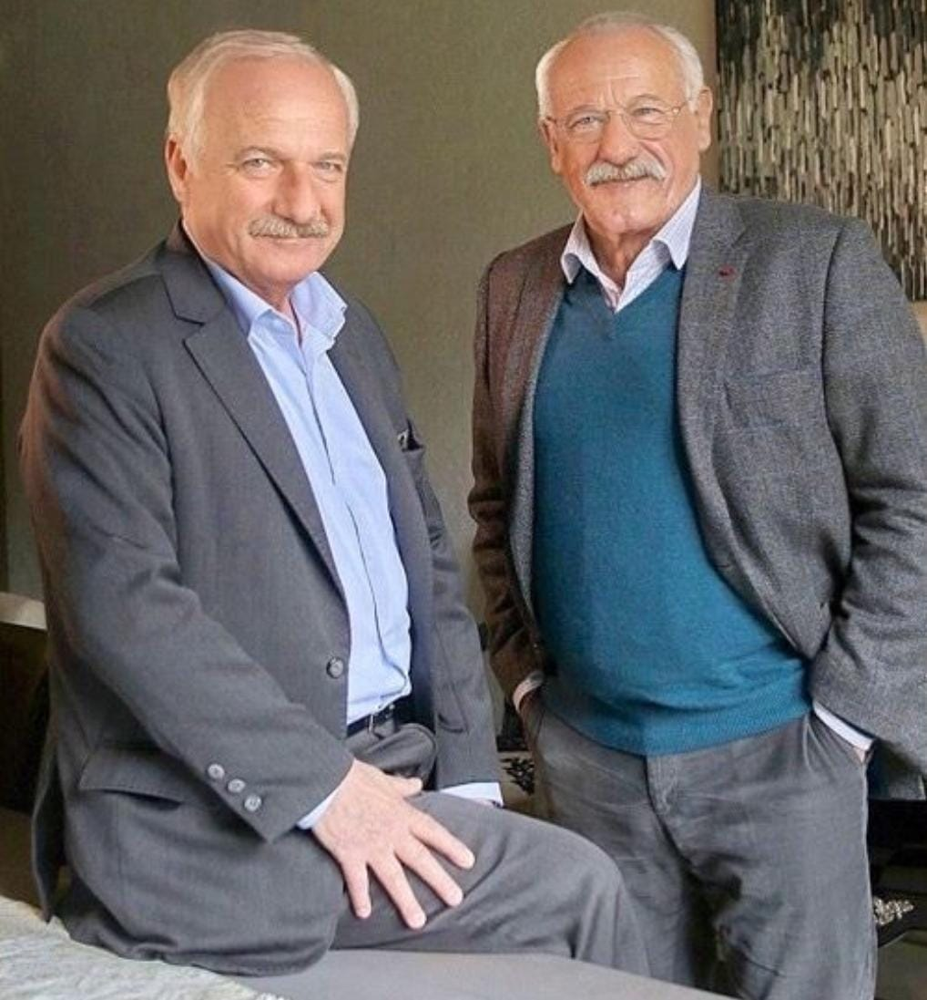
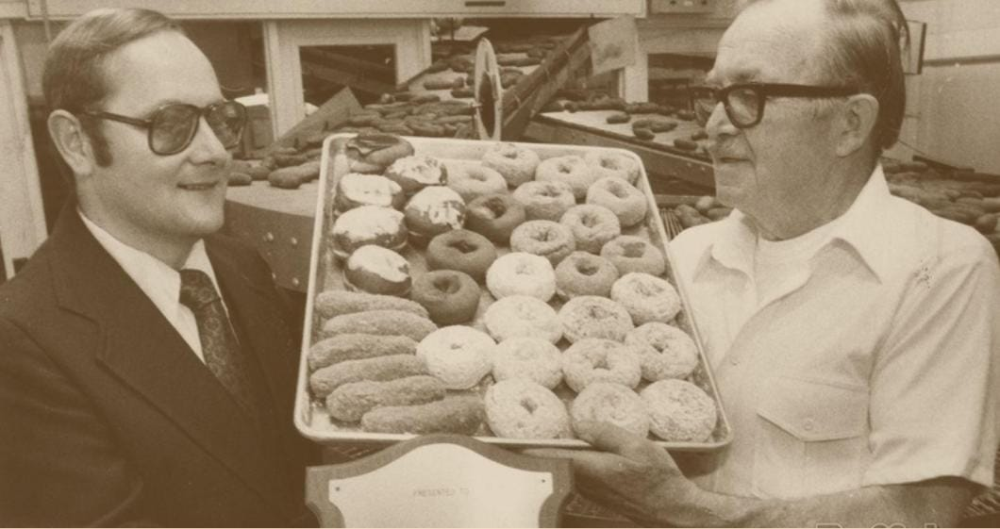

Fernando González Gómez nació en 1938 en el pueblo de Liérganes, Cantabria. Su padre era panadero, por lo que desde muy pequeño se apasiona por la cocina, la repostería y especialmente la pastelería. A los 14 años empezó a trabajar en la panadería hasta que su padre murió de una grave enfermedad, dejándole su herencia. Fernando, destrozado por el dolor, fue incapaz de continuar con el negocio familiar; decidió cerrarlo con la esperanza de reabrirlo en el futuro. En 1968 se marchó a América para alejarse del dolor causado por la pérdida de su padre y encontrar inspiración.
Aterrizó en Melvill, una pequeña ciudad cerca a Nueva York, y encontró trabajo en una prestigiosa pastelería, donde tuvo la oportunidad de aprender varias recetas americanas, permaneciendo especialmente encantado con los icónicos donuts con agujeros. Aquí conoce a su colega Will Wilson Smith y entre los dos nace una gran amistad porque tienen muchos intereses en común. Después de ahorrar dinero, los dos amigos deciden volver al pueblo natal de Fernando y reabrir juntos la panadería de su padre, convirtiéndola en una tienda de donuts llamada ¡Hola Donuts! con el lema ¡Los donuts son para todos!
La producción de Donuts atrae muchos clientes y en dos años ellos abrieron otras dos tiendas en Madrid y Valencia. La marca alcanza un gran éxito y hoy cuenta con más de 300 tiendas en toda España y se encuentra entre las cinco empresas de alimentación más influyentes y con mayor éxito económico del país.
En el año 2000, los dos amigos, felices y satisfechos con lo que habían creado, decidieron de retirarse y cedieron la administración de las tiendas a Liam Styles, un famoso empresario estadounidense y fiel cliente suyo que, en poco tiempo, empezó a abrir tiendas ¡Hola Donuts! por todo el mundo.
 